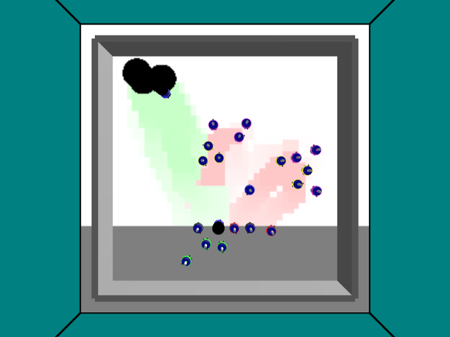
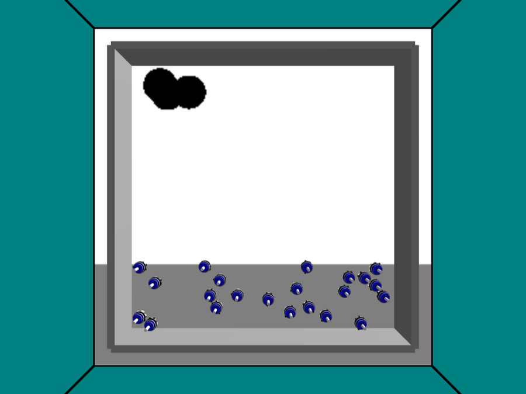
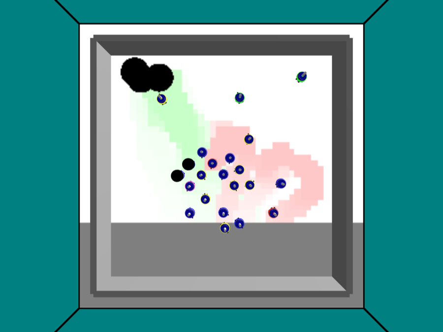
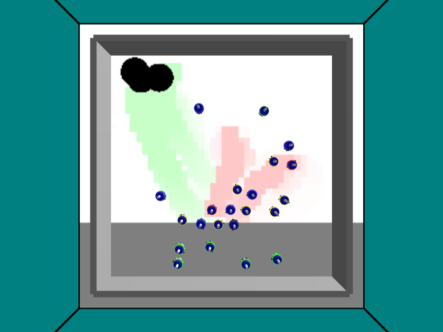

Stage report, step 6 of 6. Back to summary
Stage 6: Qt demo, d = 2
| What | Frames from the Qt demo at d = 2, defense off and on (capture by make_demo.py --capture). |
|---|---|
| Why | The Vision is one demo that shows the defense winning back lost food. |
| Input data | Live Qt run (headless frame grabbing), seed 1, frozen values. |
| Output data | 43 frames in results/real/mvp3/demo/. |
| Result (numbers) | 43 frames. First, middle and last of each arm are shown. |
| Result (good or bad) | Good: both arms have frames. |
| Status | ran |
Figure and table






| file | size (KB) |
|---|---|
| d2_def0_00.png | 51 |
| d2_def0_01.png | 51 |
| d2_def0_02.png | 51 |
| d2_def0_03.png | 54 |
| d2_def0_04.png | 54 |
| d2_def0_05.png | 54 |
| d2_def0_06.png | 55 |
| d2_def0_07.png | 58 |
| d2_def0_08.png | 57 |
| d2_def0_09.png | 56 |
| d2_def0_10.png | 57 |
| d2_def0_11.png | 56 |
| d2_def0_12.png | 57 |
| d2_def0_13.png | 57 |
| d2_def0_14.png | 56 |
| d2_def0_15.png | 55 |
| d2_def0_16.png | 57 |
| d2_def0_17.png | 56 |
| d2_def0_18.png | 56 |
| d2_def0_19.png | 56 |
| d2_def0_20.png | 56 |
| d2_def1_00.png | 51 |
| d2_def1_01.png | 51 |
| d2_def1_02.png | 51 |
| d2_def1_03.png | 54 |
| d2_def1_04.png | 54 |
| d2_def1_05.png | 54 |
| d2_def1_06.png | 56 |
| d2_def1_07.png | 58 |
| d2_def1_08.png | 56 |
| d2_def1_09.png | 55 |
| d2_def1_10.png | 56 |
| d2_def1_11.png | 56 |
| d2_def1_12.png | 57 |
| d2_def1_13.png | 56 |
| d2_def1_14.png | 55 |
| d2_def1_15.png | 56 |
| d2_def1_16.png | 57 |
| d2_def1_17.png | 56 |
| d2_def1_18.png | 57 |
| d2_def1_19.png | 56 |
| d2_def1_20.png | 58 |
| d2_def1_21.png | 58 |